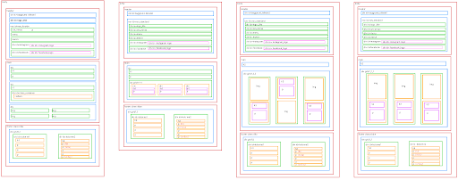
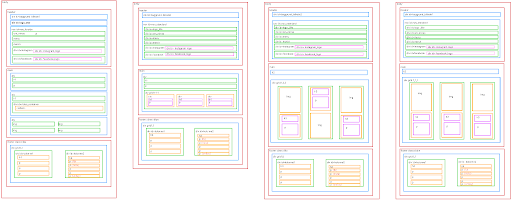

Virksoomhedssite
Her er et link til redesignet af Minas kaffebar, som mig og min gruppe lavede:Redesign af Minas Kaffebar
Kodeord er begge: kea
Arbejdsproces
Stiletiles, moodboards og inspiration
I emnet virksomdhedsite, skulle vi fokusere på at finde en hjemmeside, hvor vi kunne se potentiale på at lave et redesign af deres nuværende hjemmeside. Her var vi i grupper, jeg var sammen med 3 andre, hovr vi fordelte noget af arbejdet og noget kunne vi mødes og lave sammen. Her valgte vi at tage fokus på Minas Kaffebar, da deres nuværende hjemmeside kun består af en plakatsøjle, med tekst henover. Vi startede ud med at se, hvad deres stil er og derved kunne forme både moodboard og stiletiles. Her benyttede vi os af alle de design metoder vi har lært hen over semesteret. Så både inspiration, stilestiles, moodboards osv. Vi valgte at tage udgangspunkt i deres nuværende stil med et lille twist, foro at bibeholde deres brand.


Prototype og llayout diagram
Derefter kunne vi starte på en prototype af, hvordan vi vi ville have redesignet af hjemmesiden opstillet, både med farver, ideer til billeder og hvor de forskellgie elemeneter skulle stå. Her benyttede vi os af figma, som vi havde lært at gøre i de andre emner tidligere i semesteret, da man nemt kan rykke rundt og indsætte efter behov.
 

Montage video


Test på redsign